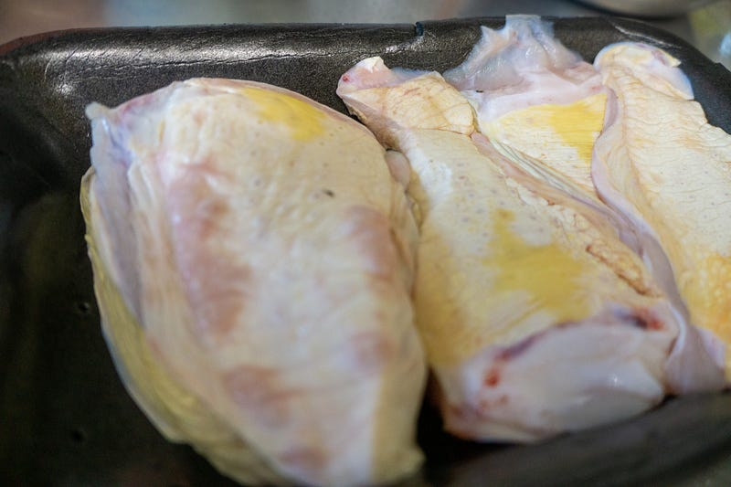
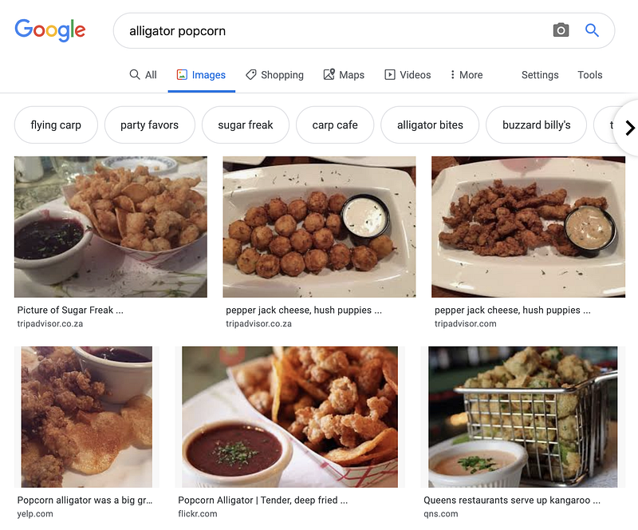
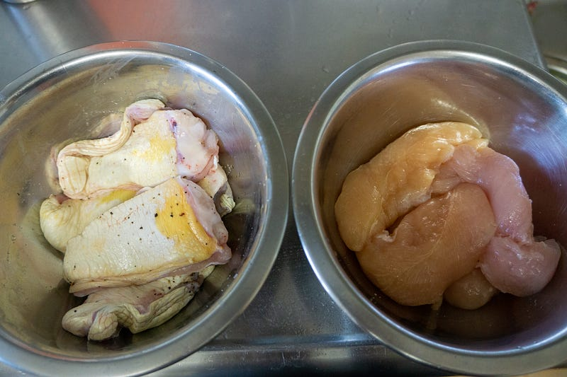
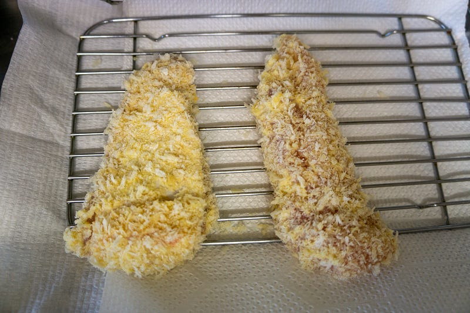
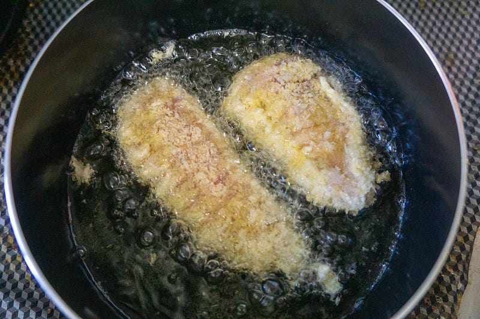
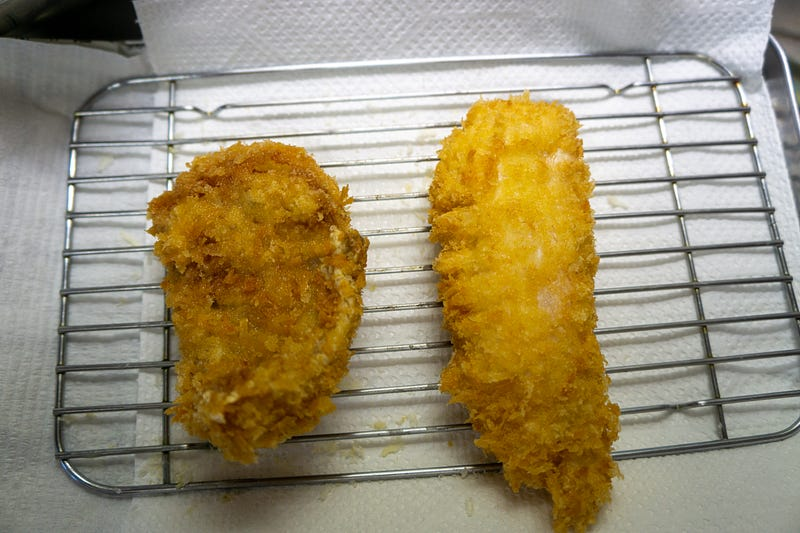
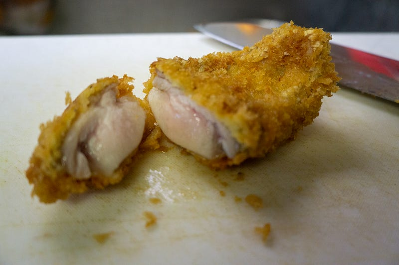
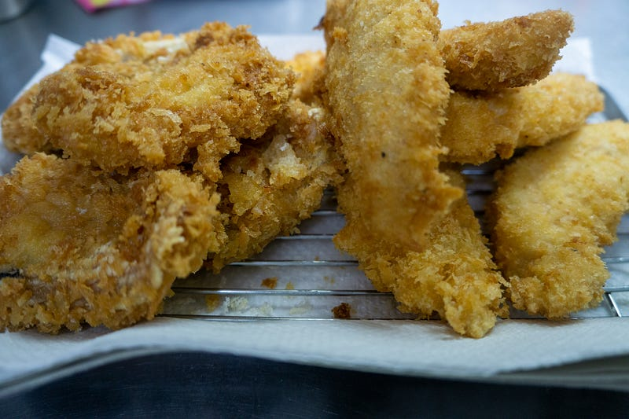

ワニ肉をやる。
ワニ肉をやる。
突然ですけど、これなんのに肉だ〜？はい、ワニですね。しかもワニの舌、タンです。

なおこの肉はMeat Guyで買った後、諸事情により僕ではなく妻が調理したので基本的には「作ってもらったレポート」です。そして内容は1ヶ月以上前のものなので記憶を頼りに書いております。
さて、今回はワニ肉。ワニ肉は昔お付き合いのあった方と一緒にルイジアナで何度かアリゲーターポップコーンとして食べたことあるのでなんか魚？の味のする鶏肉みたいな感じなのは知ってた。ちなみにアリゲーターポップコーンとビールはうまい。

妻はともかく子供達は食べないと思ったので、鶏ささみも用意して、両方ともフライにします。

さて、先に言っとかないといけないんだけど… このワニの皮の肉は調理前に取り除かないといけない。厳密に言えば食べられるけど、食感がイマイチ。
僕は肉が大好きで妻にステーキ等の焼き加減とかをどうするのか聞かれると「肉の気持ちになって、中の火の通り方を感じるんだ！」って言うタイプの人間なのでこのワニの皮も調理中に気づけたと思うのだけど、妻はそこまで肉に愛のあるタイプではないので、この後は皮ごと調理が進んでしまった。
今後ワニを調理する皆さんにおいてはそのあたりを気をつけてくだされ。

左がワニ、右が鶏ささみ。味付けは塩胡椒。衣は普通のフライ。

揚げる。右側がワニ。左側がささみ。多分皮のせいで、すごい縮む

左がワニ、右が鶏ささみ。

ほい、切れた。断面を見てわかると思うけど、皮と身の部分にくっきりと肉質の違う層が見える。肉質は鶏もも肉っぽい感じ。

肝心のお味は、基本鶏肉って感じで、かなりジューシー。癖らしい癖も特になく、柔らかい。強いて言えば冒頭で書いたように、動物っぽい匂いの他に少しだけ水生動物の味がする。鶏もも肉です、と言われて出されても一瞬分からないのではないだろうか。
癖のある感じとかは皮に強く、グニグニした食感も皮だけなので、皮さえなければわりと誰でも食べられると思う。
味はふつうにおいしいのだけど、日本でわざわざこれを食べる必要があるかというと、う〜〜〜ん、鶏肉でいいかな、という感じ。もっとおいしい食べ方があるのかもしれないので知っていたら教えて欲しい。
予想では低温調理をしたのち、サイコロ状に切って軽いムニエル風味にしたらもっとおいしいと思う。衣をつけないとちょっと味がたんぱくかなぁと思うので。